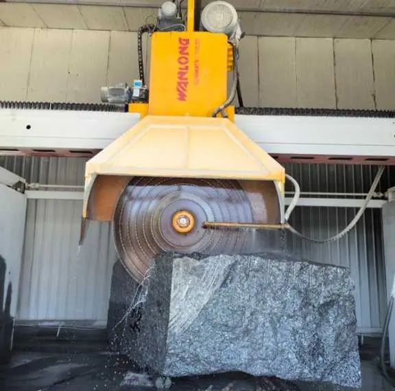

فروشگاه تسمه بزرگمهر با بیش از دو دهه فعالیت تخصصی، یکی از معتبرترین مراکز خرید انواع تسمه صنعتی در تهران و خیابان سعدی جنوبی است. ما تأمینکننده اصلی تسمههای انتقال نیرو، تایمینگ، پروانه، شیاری، جوشی، دورمتغیر و نقاله PVC برای انواع صنایع سبک و سنگین میباشیم.
در بزرگمهر، کیفیت و اصالت کالا اولویت ماست. تمام محصولات از برندهای معتبر داخلی و خارجی تأمین شده و همراه با مشاوره فنی رایگان ارائه میگردد تا بهترین انتخاب مطابق با نوع دستگاه، شرایط کاری و بودجه شما انجام شود.
با اتکا به تجربه، موجودی کامل، شبکه تأمین گسترده و ارسال سریع به سراسر کشور، تلاش میکنیم نیاز صنعتگران، کارخانهها، کارگاهها، تعمیرکاران و مصرفکنندگان را بدون توقف تولید برطرف کنیم.
جهت استعلام قیمت روز، دریافت مشخصات فنی یا انتخاب تسمه مناسب، میتوانید با کارشناسان ما در تماس باشید.
تسمه صنعتی یکی از مهمترین اجزای انتقال نیرو در ماشینآلات است. این قطعه انرژی را بین دو یا چند پولی منتقل کرده و باعث حرکت پیوسته و هماهنگ دستگاه میشود. انواع تسمه در صنایع خودروسازی، غذایی، کشاورزی، نساجی، چاپ و بستهبندی، معدن، نفت و پتروشیمی بهطور گسترده استفاده میشود.
انتخاب صحیح تسمه صنعتی، موجب افزایش عمر مفید دستگاه، کاهش استهلاک و جلوگیری از توقف تولید میشود. تسمههای ارائهشده توسط بزرگمهر دارای استانداردهای جهانی ISO و DIN بوده و از مواد اولیه باکیفیت تولید شدهاند.
مناسب برای انتقال دقیق حرکت و هماهنگسازی چرخدندهها در ماشینآلات صنعتی.
ویژه انتقال نیرو با اصطکاک بالا، مناسب انواع دستگاههای صنعتی و کارگاهی.
کاربرد گسترده در انتقال نیرو در کمپرسورها، دینامها و ماشینآلات سنگین.
تسمه گرد PU و PVC مناسب دستگاههای انتقال مواد و صنایع غذایی.
طراحیشده برای دستگاههایی با تغییر سرعت مداوم و بار متغیر.
تسمههای تخت با لایه پلیآمید برای انتقال نیرو با کمترین افت و لرزش.
مناسب خطوط تولید، صنایع غذایی، بستهبندی، کشاورزی و انتقال مواد.
تهران، خیابان امیرکبیر، ابتدای سعدی جنوبی، پاساژ ایران (بلوک ۷ غربی)، واحد ۴۰۱
تلفن:021-33929881 - 021-36871848